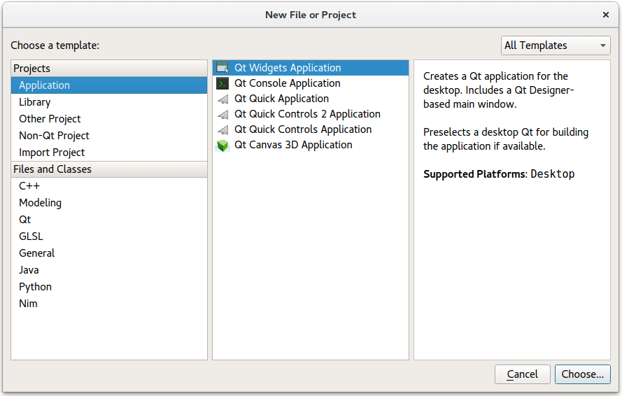
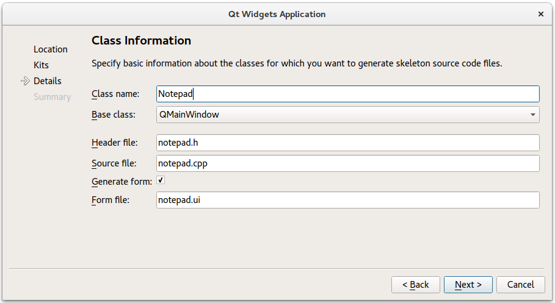

Getting Started Programming with Qt Widgets
In this topic, we teach basic Qt knowledge by implementing a simple Notepad application using C++ and the Qt Widgets module. The application is a small text editor which allows you to create a text file, save it, print it, or reopen and edit it again. You can also set the font to be used.

You can find the final Notepad source files in the qtdoc repository in the snippets/widgets-tutorial/notepad directory. You can either fetch the Qt 5 sources from Qt Project or install them as part of Qt 5.
Creating the Notepad Project
Setting up a new project in Qt Creator is aided by a wizard that guides you step-by-step through the project creation process. The wizard prompts you to enter the settings needed for that particular type of project and creates the project for you.

To create the Notepad project, select File > New File or Project > Applications > Qt Widgets Application > Choose, and follow the instructions of the wizard. In the Class Information dialog, type Notepad as the class name and select QMainWindow as the base class.

The Qt Widgets Application wizard creates a project that contains a main source file and a set of files that specify a user interface (Notepad widget):
- notepad.pro - the project file.
- main.cpp - the main source file for the application.
- notepad.cpp - the source file of the notepad class of the Notepad widget.
- notepad.h - the header file of the notepad class for the Notepad widget.
- notepad.ui - the UI form for the Notepad widget.
The .cpp, .h, and .ui files come with the necessary boiler plate code for you to be able to build and run the project. The .pro file is complete. We will take a closer look at the file contents in the following sections.
Learn More
| About | Here |
|---|---|
| Using Qt Creator | Qt Creator |
| Creating other kind of applications with Qt Creator | Qt Creator Tutorials |
Main Source File
The wizard generates the following code in the main.cpp file:
#include "notepad.h" #include <QApplication> int main(int argc, char *argv[]) { QApplication EditorApp(argc, argv); Notepad Editor; Editor.show(); return EditorApp.exec(); }
We will go through the code line by line. The following lines include the header files for the Notepad widget and QApplication. All Qt classes have a header file named after them.
#include "notepad.h" #include <QApplication>
The following line defines the main function that is the entry point for all C and C++ based applications:
int main(int argc, char *argv[]) {
The following line creates a QApplication object. This object manages application-wide resources and is necessary to run any Qt program that uses Qt Widgets. It constructs an application object with argc command line arguments run in argv. (For GUI applications that do not use Qt Widgets, you can use QGuiApplication instead.)
QApplication EditorApp(argc, argv);
The following line creates the Notepad object. This is the object for which the wizard created the class and the UI file. The user interface contains visual elements that are called widgets in Qt. Examples of widgets are text edits, scroll bars, labels, and radio buttons. A widget can also be a container for other widgets; a dialog or a main application window, for example.
Notepad Editor;
The following line shows the Notepad widget on the screen in its own window. Widgets can also function as containers. An example of this is QMainWindow which often contains several types of widgets. Widgets are not visible by default; the function show() makes the widget visible.
Editor.show();
The following line makes the QApplication enter its event loop. When a Qt application is running, events are generated and sent to the widgets of the application. Examples of events are mouse presses and key strokes.
return EditorApp.exec();
Learn More
| About | Here |
|---|---|
| Widgets and Window Geometry | Window and Dialog Widgets |
| Events and event handling | The Event System |
Designing a UI
The wizard generates a user interface definition in XML format: notepad.ui. When you open the notepad.ui file in Qt Creator, it automatically opens in the integrated Qt Designer.
When you build the application, Qt Creator launches the Qt User Interface Compiler (uic) that reads the .ui file and creates a corresponding C++ header file, ui_notepad.h.
Using Qt Designer
The wizard creates an application that uses a QMainWindow. It has its own layout to which you can add a menu bar, dock widgets, toolbars, and a status bar. The center area can be occupied by any kind of widget. The wizard places the Notepad widget there.
To add widgets in Qt Designer:
- In the Qt Creator Editor mode, double-click the notepad.ui file in the Projects view to launch the file in the integrated Qt Designer.
- Drag and drop widgets Text Edit (QTextEdit) to the form.
- Press Ctrl+A (or Cmd+A) to select the widgets and click Lay out Vertically (or press Ctrl+L) to apply a vertical layout (QVBoxLayout).
- Press Ctrl+S (or Cmd+S) to save your changes.
The UI now looks as follows in Qt Designer:

You can view the generated XML file in the code editor:
<?xml version="1.0" encoding="UTF-8"?>
<ui version="4.0">
<class>Notepad</class>
<widget class="QMainWindow" name="Notepad">
<property name="geometry">
<rect>
<x>0</x>
<y>0</y>
<width>524</width>
<height>300</height>
</rect>
</property>
<property name="windowTitle">
<string>Notepad</string>
</property>
<widget class="QWidget" name="centralWidget">
<layout class="QVBoxLayout" name="verticalLayout">
<item>
<widget class="QTextEdit" name="textEdit"/>
</item>
</layout>
</widget>
<widget class="QMenuBar" name="menuBar">
...
The following line contains the XML declaration, which specifies the XML version and character encoding used in the document:
<?xml version="1.0" encoding="UTF-8"?>
The rest of the file specifies an ui element that defines a Notepad widget:
<ui version="4.0">
The UI file is used together with the header and source file of the Notepad class. We will look at the rest of the UI file in the later sections.
Notepad Header File
The wizard generated a header file for the Notepad class that has the necessary #includes, a constructor, a destructor, and the Ui object. The file looks as follows:
#include <QMainWindow> namespace Ui { class Notepad; } class Notepad : public QMainWindow { Q_OBJECT public: explicit Notepad(QWidget *parent = 0); ~Notepad(); private: Ui::Notepad *ui; };
The following line includes QMainWindow that provides a main application window:
#include <QMainWindow>
The following lines declare the Notepad class in the Ui namespace, which is the standard namespace for the UI classes generated from .ui files by the uic tool:
namespace Ui { class Notepad; }
The class declaration contains the Q_OBJECT macro. It must come first in the class definition, and declares our class as a QObject. Naturally, it must also inherit from QObject. A QObject adds several abilities to a normal C++ class. Notably, the class name and slot names can be queried at runtime. It is also possible to query a slot's parameter types and invoke it.
class Notepad : public QMainWindow { Q_OBJECT
The following lines declare a constructor that has a default argument called parent. The value 0 indicates that the widget has no parent (it is a top-level widget).
public: explicit Notepad(QWidget *parent = 0);
The following line declares a virtual destructor to free the resources that were acquired by the object during its life-cycle. According to the C++ naming convention, destructors have the same name as the class they are associated with, prefixed with a tilde (~). In QObject, destructors are virtual to ensure that the destructors of derived classes are invoked properly when an object is deleted through a pointer-to-base-class.
~Notepad();
The following lines declare a member variable which is a pointer to the Notepad UI class. A member variable is associated with a specific class, and accessible for all its methods.
private: Ui::Notepad *ui;
Notepad Source File
The source file that the wizard generated for the Notepad class looks as follows:
#include "notepad.h" #include "ui_notepad.h" Notepad::Notepad(QWidget *parent) : QMainWindow(parent), ui(new Ui::Notepad) { ui->setupUi(this); } Notepad::~Notepad() { delete ui; }
The following lines include the Notepad class header file that was generated by the wizard and the UI header file that was generated by the uic tool:
#include "notepad.h" #include "ui_notepad.h"
The following line defines the Notepad constructor:
Notepad::Notepad(QWidget *parent) :
The following line calls the QMainWindow constructor, which is the base class for the Notepad class:
QMainWindow(parent),
The following line creates the UI class instance and assigns it to the ui member:
ui(new Ui::Notepad)
The following line sets up the UI:
ui->setupUi(this);
In the destructor, we delete the ui:
Notepad::~Notepad() { delete ui; }
In order to have the text edit field occupy the whole screen, we add setCentralWidget to the main window.
Notepad::Notepad(QWidget *parent) : QMainWindow(parent), ui(new Ui::Notepad) { ui->setupUi(this); this->setCentralWidget(ui->textEdit); }
Project File
The wizard generates the following project file, notepad.pro, for us:
#-------------------------------------------------
#
# Project created by QtCreator 2017-07-10T14:20:07
#
#-------------------------------------------------
QT += core gui printsupport
greaterThan(QT_MAJOR_VERSION, 4): QT += widgets
TARGET = Notepad
TEMPLATE = app
# The following define makes your compiler emit warnings if you use
# any feature of Qt which as been marked as deprecated (the exact warnings
# depend on your compiler). Please consult the documentation of the
# deprecated API in order to know how to port your code away from it.
DEFINES += QT_DEPRECATED_WARNINGS
# You can also make your code fail to compile if you use deprecated APIs.
# In order to do so, uncomment the following line.
# You can also select to disable deprecated APIs only up to a certain version of Qt.
#DEFINES += QT_DISABLE_DEPRECATED_BEFORE=0x060000 # disables all the APIs deprecated before Qt 6.0.0
SOURCES += main.cpp\
notepad.cpp
HEADERS += notepad.h
FORMS += notepad.ui
RESOURCES += \
notepad.qrc
The project file specifies the application name and the qmake template to use for generating the project, as well as the source, header, and UI files included in the project.
You could also use qmake's -project option to generate the .pro file. Although, in that case, you have to remember to add the line QT += widgets to the generated file in order to link against the Qt Widgets Module.
Learn More
| About | Here |
|---|---|
| Using Qt Designer | Qt Designer Manual |
| Layouts | Layout Management, Widgets and Layouts, Layout Examples |
| The widgets that come with Qt | Qt Widget Gallery |
| Main windows and main window classes | Application Main Window, Main Window Examples |
| QObjects and the Qt Object model (This is essential to understand Qt) | Object Model |
| qmake and the Qt build system | qmake Manual |
Adding User Interaction
To add functionality to the editor, we start by adding menu items and buttons on a toolbar.
Click on "Type Here", and add the options New, Open, Save, Save as, Print and Exit. This creates 5 lines in the Action Editor below. To connect the actions to slots, right-click an action and select Go to slot > triggered(), and complete the code for that given slot.
If we also want to add the actions to a toolbar, we can assign an icon to each QAction, and then drag the QAction to the toolbar. You assign an icon by entering an icon name in the Icon property of the action concerned. When the QAction has been dragged to the toolbar, clicking the icon will launch the associated slot.
Complete the method on_actionNew_triggered() :
void Notepad::on_actionNew_triggered() { currentFile = ""; ui->textEdit->setText(""); }
current_file is a global variable containing the file presently being edited. It is defined in the private part of notepad.h:
private: Ui::Notepad *ui; QString CurrentFile;
setText("") clears the text buffer.
Opening a file
In notepad.ui, right click on actionOpen and select Go to slot
Complete method on_actionOpen_triggered().
void Notepad::on_actionOpen_triggered() { QString fileName = QFileDialog::getOpenFileName(this, "Open the file"); QFile file(fileName); currentFile = fileName; if (!file.open(QIODevice::ReadOnly | QFile::Text)) { QMessageBox::warning(this,"..","File not opened."); return; } QTextStream in(&file); QString text = in.readAll(); ui->textEdit->setText(text); file.close(); }
QFileDialog::getOpenFileName opens a dialog enabling you to select a file. QFile object myfile has the selected file_name as parameter. We store the selected file also into the global variable current_file for later purposes. We open the file with file.open as a readonly text file. If it cannot be opened, a warning is issued, and the program stops.
We define a QTextStream instream for parameter myfile. The contents of file myfile is copied into QString text. setText(text) fille the buffer of our editor with text.
section2 Saving a file
We create the method for saving a file in the same way as for Opening a file, by right clicking on actionSave, and selecting Go to Slot.
void Notepad::on_actionSave_triggered() { QFile file(currentFile); if (!file.open(QIODevice::WriteOnly | QFile::Text)) { QMessageBox::warning(this,"..","No file opened. Use Save As"); return; } QTextStream out(&file); QString text = ui->textEdit->toPlainText(); out << text; file.flush(); file.close(); }
QFile object myfile is linked to global variable current_file, the variable that contains the file we were working with. If we cannot open myfile, an error message is issued and the method stops. We create a QTextStream outstream. The contents of the editor buffer is converted to plain text, and then written to outstream.
section2 Saving a file with Save as
void Notepad::on_actionSave_as_triggered() { QString fileName = QFileDialog::getSaveFileName(this, "Save as"); QFile file(fileName); currentFile = fileName; if (!file.open(QFile::WriteOnly | QFile::Text)) { QMessageBox::warning(this,"..","File not opened."); return; } QTextStream out(&file); QString text = ui->textEdit->toPlainText(); out << text; file.flush(); file.close(); }
This is the same procedure as for Saving a file, the only difference being that here you need to enter a new file name for the file to be created.
Print a file
If you want to use print functionalities, you need to add printsupport to the project file:
QT += core gui printsupport
We declare a QPrinter object called printer. We launch a printer dialog box and store the selected printer in object printer. If we clicked on Cancel and did not select a printer, the methods returns. The actual printer command is given with ui->textEdit->print with our QPrinter object as parameter.
Select a font
void Notepad::on_actionFont_triggered() { bool fontSelected; QFont font = QFontDialog::getFont(&fontSelected, this); if (fontSelected) { ui->textEdit->setFont(font); } }
We declare a boolean indicating if we did select a font with QFontDialog. If so, we set the font with ui->textEdit->setFont(myfont).
Copy, cut, paste, undo, redo
If you select some text, and want to copy it to the clipboard, you call the appropriate method of ui->textEdit. The same counts for cut, paste, undo, and redo.
This table shows the method name to use.
| Task | Method called |
|---|---|
| Copy | ui->textEdit->copy() |
| Cut | ui->textEdit->cut() |
| Paste | ui->textEdit->paste() |
| Undo | ui->textEdit->undo() |
| Redo | ui->textEdit->redo() |
This project contains the following files:
- {main.cpp}
- {notepad.cpp}
- {notepad.h}
- {notepad.pro}
- {notepad.ui}
Learn More
| About | Here |
|---|---|
| MDI applications | QMdiArea, MDI Example |
| Files and I/O devices | QFile, QIODevice |
| tr() and internationalization | Qt Linguist Manual, Writing Source Code for Translation, Internationalization with Qt |
Building and Running Notepad
Now that you have all the necessary files, select Build > Build Project Notepad to build and run the application. Qt Creator uses qmake and make to create an executable in the directory specified in the build settings of the project and runs it.
Building and Running from the Command Line
To build the application from the command line, switch to the directory in which you have the .cpp file of the application and add the project file (suffixed .pro) described earlier. The following shell commands then build the application:
qmake
make (or nmake on Windows)
The commands create an executable in the project directory. The qmake tool reads the project file and produces a Makefile with instructions on how to build the application. The make tool (or the nmake tool) then reads the Makefile and produces the executable binary.